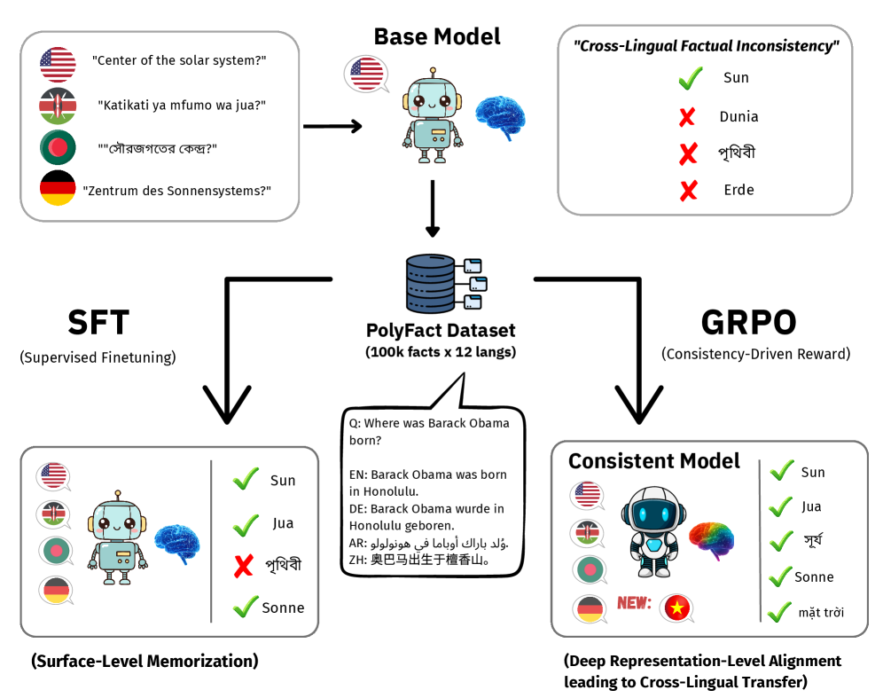
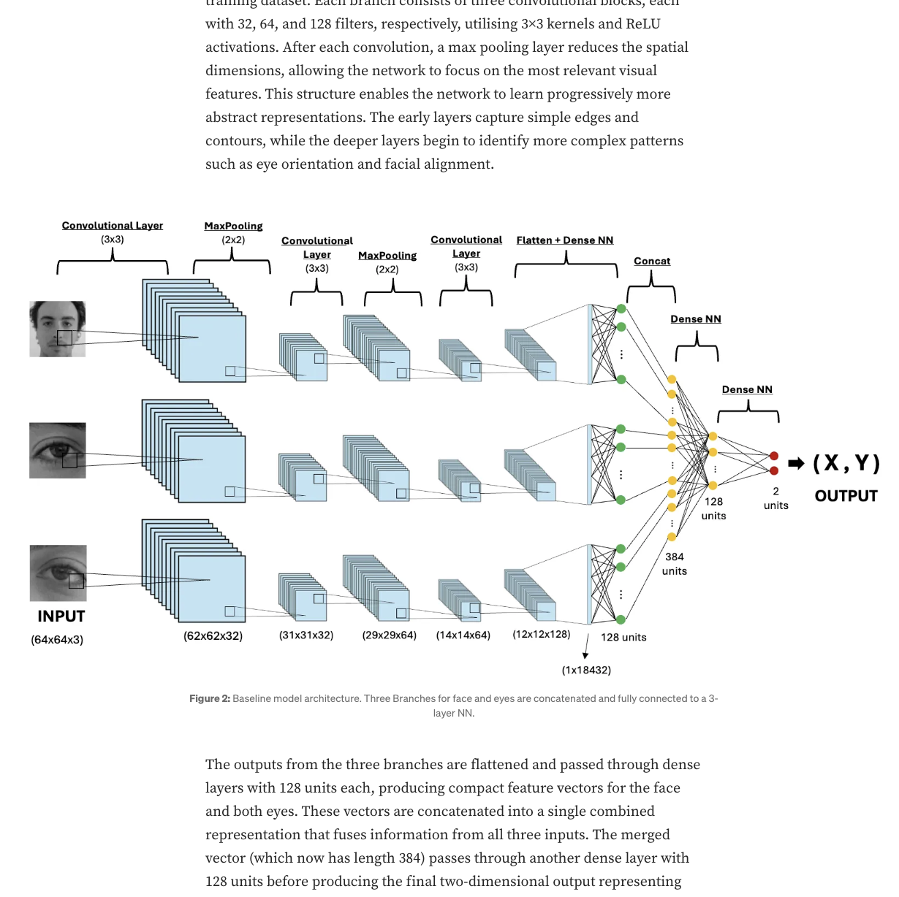
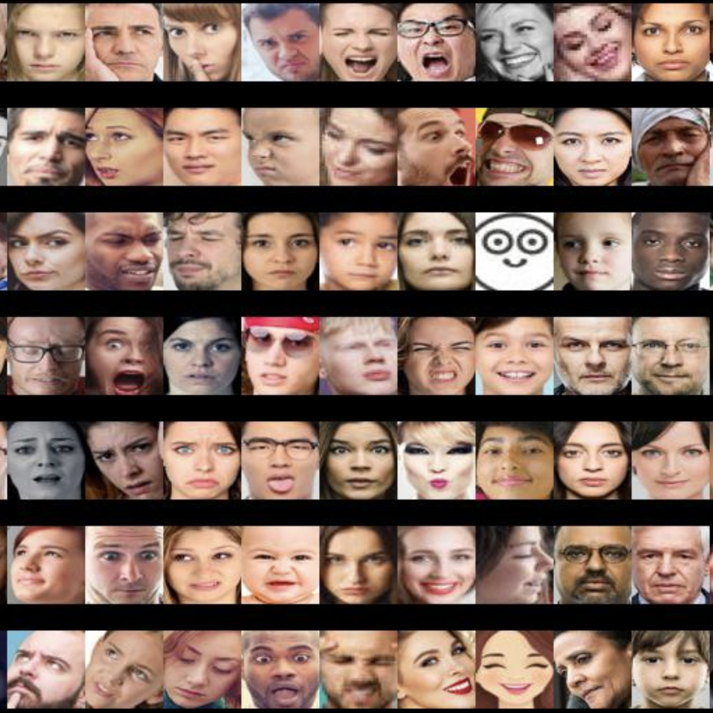
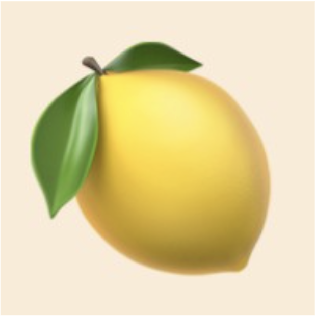

Louis Arts
MSc Data Science & Machine Learning · UCL
Open to DS/ML roles · London · from Sep 2026
About
I'm an MSc student in Data Science and Machine Learning at UCL, with a background in physics and astrophysics from Imperial College London. My work sits at the intersection of machine learning, computer vision, and applied NLP. I'm interested in building models that generalise well beyond their training distribution and systems that are both technically rigorous and practically useful.
Previously, I interned at LemonAI in London, where I researched linguistic noise patterns in transcription data and built hybrid NLP data augmentation pipelines using the Claude API. I'm fluent in Dutch, French, and English, and I'm based in London.
News
- Jun 2026 Submitted research on cross-lingual factual recall in large language models to EMNLP 2026. Paper currently under review.
- Dec 2025 Published an article on Medium on my passion project: building a mobile eye-tracking system from scratch, training a three-branch CNN on 1.5M+ frames to achieve sub-centimetre gaze accuracy.
- Sep 2025 Began the MSc in Data Science and Machine Learning at University College London.
- Oct 2023 Graduated with an MSc in Physics (Astrophysics) from Imperial College London, completing a research thesis on galaxy simulations for objects observed by the James Webb Space Telescope.
Projects
-

Cross-Lingual Factual Recall via Reinforcement Learning
Benchmarked cross-lingual factual recall across 100K Wikidata facts and 12 languages; led mechanistic interpretability analysis identifying language-specific MLP neurons and showing GRPO training shifts processing to deeper, more general layers.
arXiv GitHub -

End-to-End Mobile Eye-Tracking System
Three-branch CNN trained on 1.5M+ augmented frames with custom data preprocessing, achieving 1.4 cm MAE on a held-out test set and deployed as a real-time mobile prototype.
GitHub -

Real-Time Facial Emotion Recognition
Transfer learning on DenseNet169 with data augmentation, achieving 81% test accuracy on a class-balanced dataset of 40K+ labelled images. Presented at Le Wagon Demo Day.
GitHub -

LLM Noise Injection Pipeline Internship
Hybrid rule-based + Claude API data augmentation pipeline synthesising realistic transcription noise (disfluencies, phonetic substitutions, filled pauses, repetitions) to expand training distribution and reduce OOD degradation in production speech NLP models.
Education
-
 University College London
University College LondonComputer Vision · Statistical Data Science · Applied ML/DL · Reinforcement Learning · Bayesian DL · Statistical NLP
-
Imperial College London
General Relativity · Cosmology · Research Computing
Thesis: Evaluating FLARES Simulations for High Redshift 'Little Red Dots' →
-
 Le Wagon, Zurich
Le Wagon, Zurich -